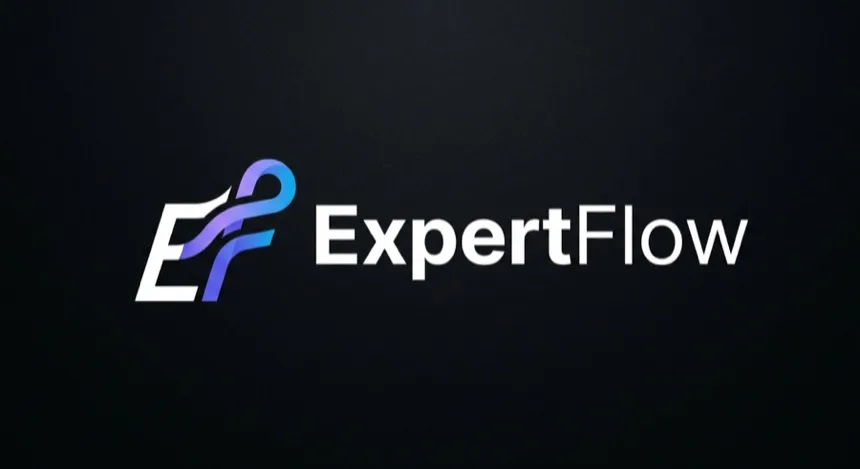

I hired Leon to build The Home Screen website. He iterated quickly as we worked through the project, and I was happy with the final website.
Software engineer · Hayward, California
Leon Kelvin Li
I build apps and tools from the first sketch to the live product. Recent work includes Curio on the App Store and a location-planning system that scans every U.S. ZIP code.
🇺🇸 English
🇨🇳 Chinese
🇧🇷 Portuguese
🇪🇸 Spanish
scroll
// selected work
Work I've shipped
These are the projects I'd show first. Use the filters if you want to see the rest.
Curio
Curio is an iPhone app for learning something new without leaving the scroll. Each card is a short, sourced story, and Curio AI lets readers ask questions or keep digging. I built the app, backend, content pipeline, and App Store release.
App Store
Public release
Shipped July 2026 and actively maintained
4
Languages
English, 中文, Español, Português
Whole product
What I built
iOS app, API, content pipeline and launch
- Built the pipeline that creates, checks, translates, and refreshes the cards
- Built Curio AI for follow-up questions, quizzes, and related rabbit holes, with retrieval and validation before an answer is shown
- Added read-aloud, eye protection, soundtracks, language learning, scenarios, and community stories
- Shipped the iOS app from one React + Capacitor codebase, backed by Express and PostgreSQL
- Added regression guards that bring old bugs back on purpose and make sure the matching tests catch them before a build can pass
ReactTypeScript
ViteCapacitor 8
TailwindFramer Motion
Node.jsPostgreSQL
OpenAIClaude API
ElevenLabsRevenueCat
New · Public demo · Aug 2026
Loqol Disclosures
Loqol helps California home sellers complete the TDS form without staring at a long PDF. It guides them through 82 questions by tap or voice, flags answers that conflict, and fills the form for signature.
82
Guided questions
63 tap, 19 conversational
159
PDF fields mapped
Form output prepared for signature
16
Consistency rules
Conflicts surfaced before completion
- Built the seller flow, agent workspace, autosave, answer history, and contradiction checks
- Mapped all 159 PDF fields and connected a working DocuSeal sandbox flow
- Still in progress: email verification, buyer and agent signing, final delivery, and long-answer handling
PythonFastAPI
ReactTypeScript
PostgreSQLpypdf
DocuSealOpenAI Realtime
ATLAS
ATLAS tests short-term FX trading ideas across 28 currency pairs. The model is only one part of it; most of the work is a testing setup that tries to prove the result wrong before I trust it.
79% → 57%
What the holdout did
Pre-registered 2003–2015 cut. I recorded the 57%
138
Registered experiments
Penalised statistics, leak-free testing
28
Currency pairs
1-minute candles, ~6 signals a day
- A calibrated LightGBM reads the just-closed candle and outputs a probability; the decision rule is an expected-value gate against the live payout, so a worse payout demands more conviction rather than a fixed confidence threshold
- A second meta-labeling model scores the trade's context — hour, volatility, trend strength — and filters signals the primary model would have taken anyway. The system abstains most of the time, and the abstaining is the edge
- Guardrails against fooling myself: chronologically purged walk-forward, probability calibration, cross-asset trade clustering, decade-scale replication on external data, Bonferroni correction, and a 154-trial deflation penalty applied to every statistic
- Rejected levers — ensembling, HAR-RV volatility features — are written down as rejected so they are never quietly retried
- Ships with an MCP server so Claude can read the broker and place demo trades. Live trading is off unless explicitly enabled, and there is no validated live edge yet — the forward test is pre-registered and still running
PythonLightGBM
scikit-learnpandas
NumPyMCP
// client work, demos & released systems

BEASTY PAGES
Glenn wanted local businesses to feel as easy to browse as apps on a phone. I built a mobile-first directory where each business gets an icon, customers can browse menus, and one cart can hold items from several vendors.
- Moved the project from its original “The Home Screen” name to the current brand and domain
- Built one shared cart with separate vendor tickets behind it
- The public site is a working prototype; payments and fulfillment are demos, not live operations
TypeScriptReact
Node.jsExpress
SQLiteRender

ALLCPR — iOS App
I rebuilt ALLCPR's iPhone app for CPR, BLS, and first-aid students. It covers class search, certificates, the store, and training locations, and currently ships through TestFlight.
- Rebuilt the app as an editable five-tab React codebase — Home, Map, Classes, Store, Profile — replacing a build that existed only as compiled output
- Built a native in-app form system for volunteer signup, group training and certificate lookup, so students stop getting handed off to the website mid-flow
- Capacitor 8 on Swift Package Manager rather than CocoaPods, with the iOS platform, icon and splash wired in and verified on device
ReactTypeScript
ViteTailwind
Capacitor 8Swift / SPM
ALLCPR Site Intelligence
ALLCPR needed a faster way to compare possible new locations. I built a bilingual map that screens all 33,772 U.S. ZIP codes using demand, competition, demographics, and the limits of the available data.
- Pulls demand signals from Google Places, competitor counts, and Census data into one report
- Can re-score the whole country from saved data without paying for another API call
- While checking it against past enrollment data, I found an older test was feeding the answer back into the score. I removed that leak and kept the weaker—but real—result
- Each ZIP shows what supports the score, what argues against it, and what is still unknown
PythonFastAPI
pandasLeaflet
Census ACSGoogle Places

Curio Automation Platform
I built the system that turns Curio ideas into videos and image posts. It handles writing, voice, captions, rendering, checks, and publishing from one queue.
- An autonomous video pipeline that runs a full build end to end at 1080×1920, with audit gates — prosody, caption fallback, listen-back scoring — that reject a run rather than ship it
- A painted quote-post engine where the artwork is generated and the text is typeset in code, so producing the same post in another language costs nothing
- A publisher split across a FastAPI queue on Render and a launchd worker on my Mac: credentials and media never leave the machine — the server only ever sees slugs
- Uses blind creative scoring, source provenance, and fail-closed media checks so a broken or weak artifact does not pass merely because a render completed
PythonFFmpeg
PillowFastAPI
launchdElevenLabs
Graph API

Continuity
I built Continuity so an AI coding session can hand its work to the next one. Goals, decisions, checkpoints, and unfinished tasks live outside the model instead of disappearing with the chat.
- Holds the project state outside the model: goal, plan, task queue, decisions, checkpoints, and a handoff any agent or person can pick up
- Local-first and runs with no LLM required — it is infrastructure above the tools, not another wrapper around one
- Tested in CI on GitHub Actions
TypeScriptNode.js
CLIGitHub Actions
Scenara
Scenara was a bilingual prediction-market simulator for Brazil, covering crypto, sports, politics, and economic news. I built the frontend, backend, deployment, and market pipeline.
- Trading engine with probability-based pricing, position tracking, balances, payouts, PnL and automated market resolution
- AI market generation from breaking news every two hours, producing bilingual YES/NO markets in English and Brazilian Portuguese
- KYC onboarding and compliance-oriented user management modeled on real fintech platforms
- Wound down in April 2026. Prediction markets remain tightly regulated in the markets Scenara targeted, with little sign of that easing, so I stopped rather than keep building toward a launch that could not happen
React NativeExpo
TypeScriptFastAPI
PostgreSQLVercel
Render
// agents & internal tools
ALLCPR Student Help Agent
This help tool answers ALLCPR students' course, certificate, and equipment questions in English and Chinese. Its answers come from the CRM manual, Smart Manikin manual, and operations log.
- Runs with no AI API key, by design — lexical retrieval over pre-written bilingual answers, ~7ms round trip, $0/month to operate. Adding a key only lets a model rephrase what was retrieved; it never adds knowledge
- The 911 emergency redirect lives in code, upstream of retrieval. It was originally in the prompt, which meant that in the shipped no-key configuration it did not exist — "my baby is not breathing" returned an infant-manikin card
- Three gates before any commit: a schema and PII scan, a coverage check that every source block is either cited by an entry or excluded with a written reason, and a question suite asserting emergencies divert to 911 while equipment questions do not
Node.jsJavaScript
ExpressRender

明途 — Gut Health Advisor
明途 answers gut-health questions in Chinese, shows how strong the evidence is, and tells the user when a doctor is the safer next step. It does not diagnose.
- A deterministic safety screen runs first. Alarm symptoms described in the first person route straight to fixed see-a-doctor wording, with no model anywhere in the path
- Hybrid retrieval — BM25 and vector, fused with RRF — weighted by evidence grade, population and regulatory class, with quotas so specific categories cannot be crowded out
- Every substantive claim must carry a source number, and an exit check verifies the citations exist and that the text makes no health claim banned under Chinese advertising and food-safety law. Failing text is rewritten; if it fails twice, the agent declines to answer
PythonFastAPI
RAGBM25
Render
ALLCPR Site Operations Agent
A bilingual staff tool for Smart Manikin training sites. It covers inspections, incident triage, new-hire onboarding, and the SOPs behind each workflow.
- A deterministic SOP answer engine with an optional model summary layer on top, so the answer does not change when the API key does
- Fully bilingual English and 中文, matching how the sites actually operate
- Staff view behind a PIN; FastAPI service auto-deploying to Render
PythonFastAPI
OpenAIRender
Yelp Review Desk
This tool watches for new Yelp reviews and drafts a reply from the facts on file. A person reviews and posts it; the software never clicks Send.
- Never auto-posts, on purpose. Yelp has no reply API and automating the business portal risks the listing, so the flow stops at "copy and open Yelp" and a person pastes. The Gmail credential is draft-only, with no send scope
- Yelp's notification emails turned out to be useless as a source of truth — truncated to about 80 characters and missing most reviews. The real refresh is a scrape from a logged-in browser; the email poll survives only as a tripwire for brand-new reviews
- Slack alerts on anything at or below four stars, plus anything escalated regardless of rating. Clean five-star reviews stay quiet
- Paired Chrome extension pre-fills the approved reply on Yelp for Business and syncs posted status back. It never clicks Send
PythonFastAPI
Gmail APISlack
Chrome Extension

ONPECY AI Lab — 3D Proposal
I turned a LiDAR scan of a real room into an interactive renovation proposal. The page puts the scan and the proposed AI lab on the same camera so the difference is easy to judge.
- The room was scanned with LiDAR and then rebuilt parametrically at its measured dimensions rather than shipped as raw scan mesh
- Every object in the 3D maps to exactly one purchase line — click it and you get the item and its price. Proving that held required dumping all 355 model node names and checking each family against the budget
- A layout audit script measures real clearances and prints the clash list, so the drawing can be checked rather than trusted. It found five furniture collisions and a 0.70 m walkway against a 0.90 m minimum
- One Python estimator is imported by both the written report and the 3D page, so the two documents cannot drift apart on a number
PythonBlender
three.jsglTF
LiDAR
// sites & smaller builds

FLORES Boxing Gloves
FLORES has been making boxing gloves in the Bay Area for about a century. I rebuilt the site around the family archive and handmade products, with galleries, a lightbox, and a direct enquiry form.
- Kept the site lightweight, with no framework or build step
- Built responsive product galleries with smaller files for phones
- Redrew the FLORES oval mark as SVG so it stays sharp at any size
HTML5CSS3
JavaScriptSquarespace

安安 — WeChat Sticker Pack
A 24-sticker WeChat pack for ALLCPR's Chinese-speaking students, in Chinese and English, with a download page.
- Captions are typeset in code instead of baked into the artwork, so producing the second language cost nothing
- Transparent PNGs sized for WeChat, generated by a Python pipeline rather than by hand
- Hosted download page, because WeChat has no bulk install outside its own store — the honest answer was to make saving 24 files easy, not to pretend otherwise
PythonPillow
HTML5Render

Noctilucente
The site for my own music — an EP page under an animated night sky. The only thing I make with no metric to hide behind.
- Hand-built, no framework, single page
- The animated sky is deliberately cheap to draw: no backdrop-filter anywhere, because it destroyed the frame rate on mobile
- Links out to Spotify
HTML5CSS3
JavaScriptCanvas

Leon Builds
Leon Builds is my client-services site. It brings the service pages, quotes, bookings, lead intake, ad tracking, receipts, reviews, and site analytics into one place.
- Made separate pages for websites, software, automation, and missed-lead recovery
- Connected quotes, bookings, lead receipts, and campaign tracking
- Leon Builds is the business site. This portfolio stays separate
HTML5CSS3
JavaScriptNode.js
PythonRender
// earlier work

ExpertFlow
A CRM for research teams that matches client requests with subject-matter experts and keeps consultations moving through the pipeline.
- AI matching engine scoring experts against requests, surfacing highest-fit candidates first
- Live dialer, AI call summarizer, and Kanban pipeline for deal flow
- Role-based access control (Admin / Manager / Associate) with full RBAC
- Zero-dependency single-file SPA — open and deploy anywhere instantly
HTML5CSS3
JavaScriptChart.js
Orryin Investment
A platform letting people outside the US invest using their own country's ID — a Brazilian CPF instead of a US SSN — generalised across countries. Backend MVP with KYC, FX and brokerage flows, plus a React Native onboarding app.
- KYC verification pipeline with document upload and identity checks
- FX exchange and brokerage integration flows
- React Native (Expo) mobile MVP validating onboarding and funding readiness
- Stopped on the regulatory documentation burden, not on the engineering
PythonFastAPI
React NativeExpo
MIDAS
A trading research project for cleaning market data, trying strategy ideas, and replaying them against historical data.
- Market data ingestion and normalisation pipeline
- Strategy prototyping harness with historical replay
- Performance-sensitive core in Rust and C++, analysis in Python
RustC++
Python
AIngle
An experiment in sending images from a React Native app to a FastAPI service for analysis and review.
- FastAPI backend serving a visual processing pipeline
- React Native (Expo) client for capture and review
- Built as an experiment in end-to-end model plumbing, not as a product
PythonFastAPI
React NativeExpo
catnap
AI phone and SMS intake for small businesses. Customers call or text, an AI collects their details, and the owner gets notified.
- Telephony and SMS intake with structured field extraction
- Owner notification on a completed intake
- Built for businesses that lose leads to an unanswered phone
PythonAI/NLP
Telephony APISMS
GX-Ambient
Browser extension bringing Opera GX's ambient music and adaptive sound effects to Chromium browsers.
- Dynamic ambient soundscapes adapting to browsing context
- Interactive controls for volume, theme, and sound mode
- Lightweight extension with no external dependencies
JavaScriptBrowser Extension
Web Audio API
Freelance Builds & Max4Live Devices
A mix of small-business sites, prototypes, and automation work, plus custom Max4Live MIDI devices for Ableton Live.
- Small business sites built and deployed end to end, including a dog-walking service site
- Web automation and internal tooling for one-person operations
- Max4Live MIDI devices for Ableton Live, and LED strip control over MIDI on Teensy
JavaScriptPython
Max4LiveAbleton Live
C++
// about me
I like building the whole thing.
I like projects where I can see the whole problem: what the customer needs, what the software should do, and what has to happen after it goes live.
I study Computer Engineering at Cal State East Bay. Outside class, I work on Curio and build practical tools for small teams and local businesses.
33,772
U.S. ZIP codes screened in one client system
1
App shipped to the App Store
4
Languages spoken
Full build
Design, code, deployment and updates
// client proof
What clients said
These are their exact words.
Super fast and professional. He was very interested in what I wanted and made sure to work with me 1-on-1 throughout the whole process. Communication was great, and everything was handled quickly. Definitely recommend Flores Boxing Gloves!
Leon built a system that helped us evaluate and plan new locations as ALLCPR expanded. It became a useful part of how we approached opening branches and supported our growth to more than 300 locations. He understood the business problem and built something practical that we could actually use.
// recent releases
What I shipped recently
A few recent launches and updates.
August 2026
Loqol demo opened
Opened the seller flow and agent workspace as a public demo, with contradiction checks and PDF output.
August 2026
BEASTY PAGES launched
Relaunched the project as BEASTY PAGES at beastypages.com.
August 2026
FLORES rebuilt
Published the rebuilt production site and a fresh preview.
July 2026
Curio shipped
Released Curio on the App Store and kept shipping updates.
// experience
How I got here
Jun 2026 – Present
Founder
Curio · Self-employed · San Francisco Bay Area
- Building a full-screen reading and discovery app that turns scrolling into learning — swipeable, bite-sized reads across psychology, science, history, and endless rabbit holes
- Architected the AI content engine behind the app: card generation, quality filtering, factual-risk screening, multi-language translation, and continuous replacement of weaker cards
- Shipped a native iOS app from a single React + Capacitor codebase; launched on the US App Store on July 22, 2026
- Built the automation around it — an autonomous video pipeline, a painted image-post engine, and a publisher that queues to Instagram, Facebook and YouTube while credentials never leave my machine
Apr 2026 – Present
AI Agent Development & Web Development
University of San Jose · Part-time · San Jose, CA
- Built AI agents leveraging LLMs, prompt engineering, and workflow orchestration
- Designed and integrated APIs, databases, and system pipelines for production use
- Developed full-stack web platforms (React, JavaScript, backend services) supporting AI systems
- Created dashboards and user interfaces for interacting with AI-driven applications
- Contributed to applied AI innovation projects and deployment-ready systems
Oct 2025 – Apr 2026
Founder & Sole Engineer
Scenara · Self-employed · California
- Architected and built a bilingual prediction-market simulation platform targeting Brazil — trading engine, probability pricing, position tracking, payouts, PnL and automated market resolution
- Designed an AI market-generation system (GNews + Groq Llama 3) producing bilingual YES/NO markets from breaking news every 2 hours, removing manual market authoring
- Built 9 production REST endpoints on FastAPI/PostgreSQL; migrated SQLite → PostgreSQL on Render under live load with zero data loss
- Owned full CI/CD across Vercel and Render — deploy-to-production under 90 seconds, zero-downtime releases
- Wound it down in April 2026: prediction markets remain tightly regulated in the markets it targeted, so I stopped rather than keep building toward a launch that could not happen
May 2025 – Apr 2026
Robotics Development Intern
GTSP Special Projects Group · Santa Clara, CA
- Assisted in design, development, and optimization of robotic systems for specialized engineering projects
- Supported engineers in calibrating automated machinery and improving actuator response for precision tasks
- Identified control logic inefficiencies that reduced setup time for new system configurations
May 2022 – Apr 2024
Founder & President, Coding Club
Green River College · Part-time · Auburn, WA
- Founded and led a student coding club focused on building real-world projects and developing technical skills
- Organized workshops, collaborative coding sessions, and introduced members to Python and web development
Apr 2019 – Dec 2019
Max4Live Plugin Developer
Ableton · Seasonal · Brazil (Remote)
- Developed a custom plugin for Ableton's Launchpad using Max4Live, enhancing visual performance and MIDI interactivity
- Integrated audio processing logic and interactive user controls into the device interface
// education
Where I study
B.S. Computer Engineering — In Progress
California State University, East Bay · Hayward, CA
Sept 2024 – May 2027
// let's connect
Tell me what you're building.
I'm open to software internships and freelance projects. If you think I can help, send me the problem and where the project stands.
Hayward, CA
510-826-7735
leondragon3798@gmail.com